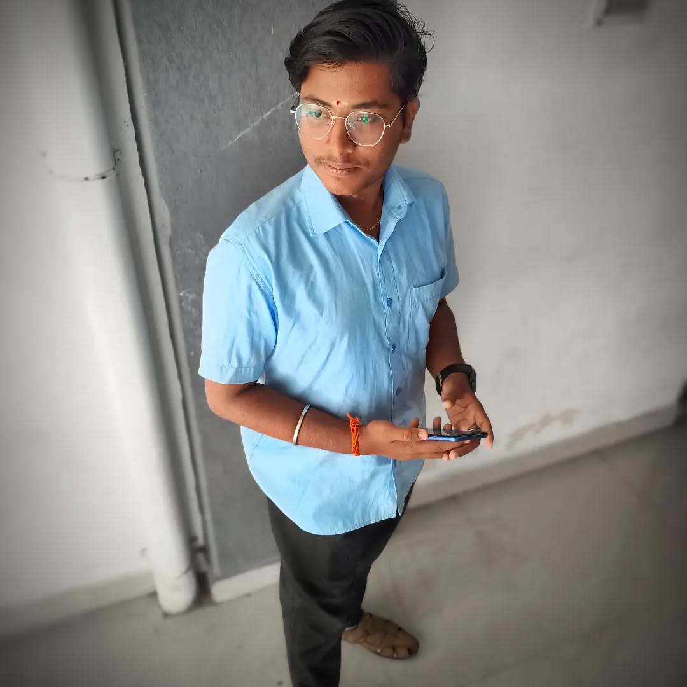

About Me

Still early. Still building.
I'm a student learning web development by actually shipping things — not just following along. I'd rather have a rough project that works than a perfect plan that doesn't exist yet.
Most of what's on this site started as "I wonder if I can build that." I care about writing code I can explain, and about getting a little better with every project.
When I'm not at the keyboard, I'm usually reading about whatever broke last time — that's normally where the real learning happens.